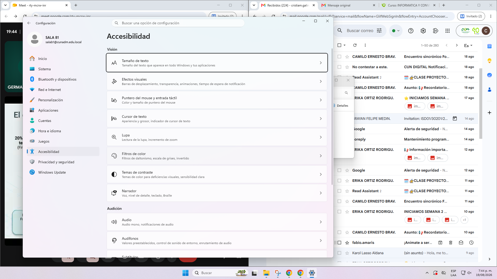

PROTOTIPO | ARDUINO INTEGRATED
ARMARIO INTELIGENTE CONECTADO
Encuentra tus objectos de forma sencilla mediante un sistema inteligente de sensores,
microcontroladores y guias luminicas LED de respuesta instanea.

Smart Closet es un prototipo funcional de armario inteligente creado con Arduino que permite localizar objetos dentro de diferentes compartimentos. Al presionar un botón o enviar una consulta, el sistema activa una guía lumínica LED para indicar de forma visual y precisa su posición exacta.
Automatizació Precisa
Identificación de compartimentos sin margen de error mediante bus direccionable y confirmación de estado.
bajo Consumo
Modo reposo automático tras 10 segundos de inactividad, optimizando el consumo a 5V con apagado inteligente.
Respuesta en Milisegundos
Disparo por interrupción directa en Arduino Uno: iluminación inmediata sin retrasos perceptibles.
Arquitectura Modular
Diseñado para ampliarse de 4 nichos a guardarropas completos de alta capacidad y vestidores comerciales.
Encontrar un accesorio, prenda o calzado específico dentro de un armario con múltiples puertas y cajones puede demorar minutos valiosos y generar frustración matutina.
Desorden Residual
Al buscar un objeto entre las prisas, movemos prendas adyacentes, desdoblando ropa y desorganizando otros compartimentos previamente acomodados.
Pérdida de Tiempo
Revisar compartimento por compartimento cada mañana convierte una rutina diaria en una tarea lenta y repetitiva. Los minutos perdidos se acumulan durante la semana laboral.
Poca Visibilidad
Los objetos de uso ocasional o estacionales quedan olvidados en nichos oscuros y profundos. Sin iluminación focalizada, es casi imposible saber qué hay dentro sin encender luces generales.
Arquitectura Modular
Diseñado para ampliarse de 4 nichos a guardarropas completos de alta capacidad y vestidores comerciales.
El usuario selcciona el objeto que quiere buscar presionando el boton correspondiente (ej. 1 para billetera)
Arduino procesa la informacion, consulta los sensores IR y determina en que comportamiento esta el objeto
La LED verde indica el comportamiento correcto. la pantalla LCD confirma el hallazgo o muestra"no encontrado".